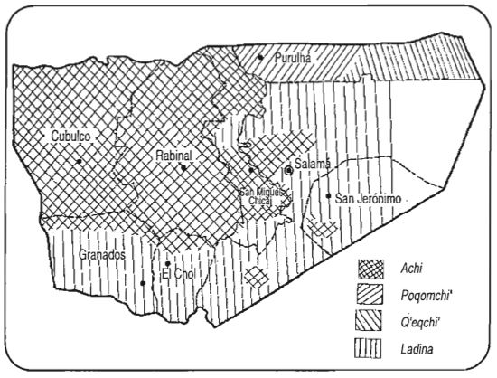

Tres de las etnias de Baja Verapaz son muy similares entre sÍ: la achi, la poqomchi' o poqom y la q'eqchi', pues vienen de un tronco común: el maya. Para no hacer repetitiva la descripción de las etnias de origen maya, en los siguientes capítulos se enumeran, en primer lugar, los rasgos comunes a las tres; luego, las peculiaridades de cada una; y, por último, se describe la etnia ladina.